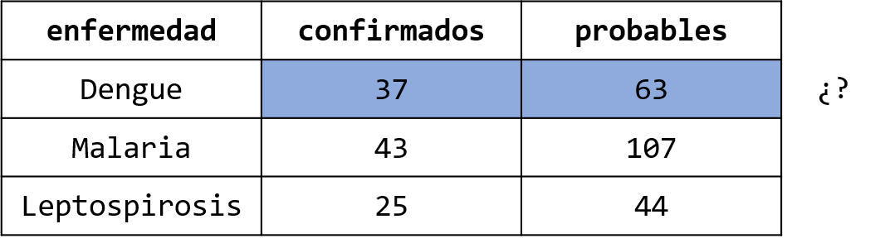
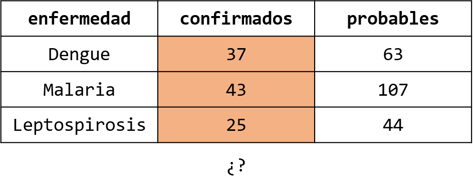
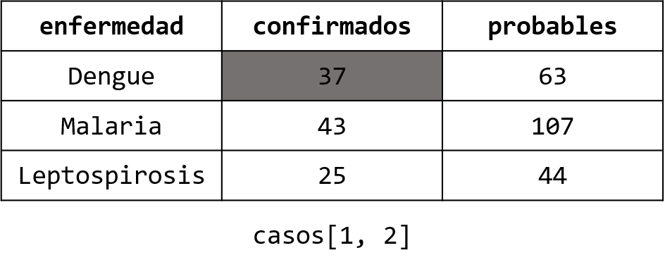
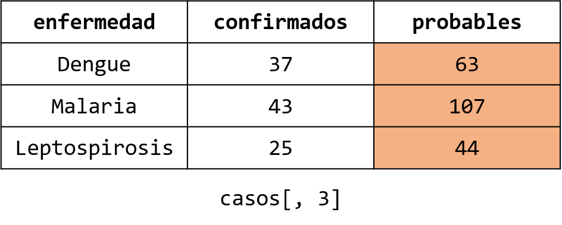
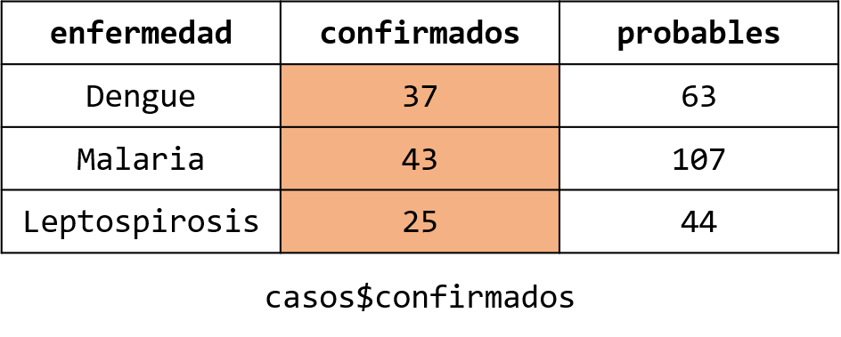
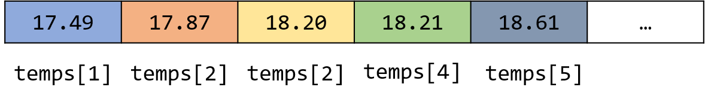
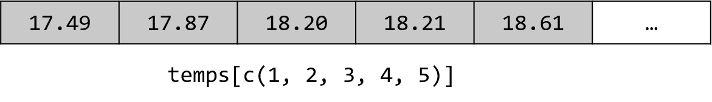
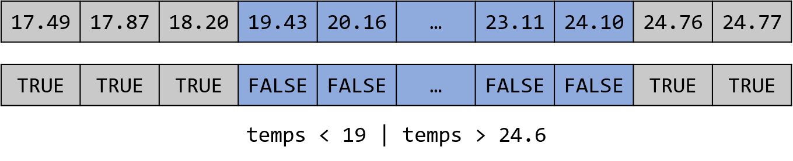
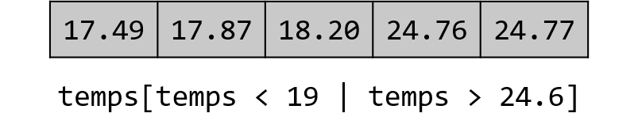

[1] TRUEIntroducción a R para el manejo de datos
Diego Villa Almeyda
¡Bienvenidos!
Diego Villa Almeyda
Algunos datos sobre mí:
- BSc en Estadística Informática de la Universidad Nacional Agraria La Molina.
- Data Analyst en el Laboratorio de Innovación en Salud, IMTAvH, UPCH.
- Próximamente: MSc Statistics with Data Science, University of Edinburgh, UK.
- Quería estudiar Biología. Ahora hubiera querido estudiar Matemáticas.
- Intereses académicos: Modelos de regresión, modelamiento espacio-temporal, estadística Bayesiana, inferencia causal, aprendizaje de máquina.
- Intereses personales: Música, gym rat, foodie, ciclismo, películas y series.
Agenda
- ¿Qué es R?
- Representando datos
- Tranformando datos
¿Qué es R?
R es un lenguaje de programación
Un lenguaje de programación es un conjunto de intrucciones y reglas que permite a los humanos comunicar órdenes a una computadora.
R
R fue originalmente desarrollado para realizar análisis estadístico.
Sin embargo, actualmente también se ha consolidado como una potente herramienta para la manipulación de datos en general en diferentes áreas como las ciencias sociales, la ecología, la medicina, las finanzas, el marketing, etc.
¿Por qué aprender R?
- Especializado en análisis estadístico
- Herramientas potentes para la manipulación y visualización de datos
- Amplia comunidad y soporte
- Gran cantidad de paquetes y extensiones
- Interoperabilidad
- Gratuito y de código abierto
- Ampliamente utilizado en la investigación académica
- Creciente demanda en la industria
COVID-19 Tracker
Reproducibilidad
Instalación de R (Windows)
Para instalar R (Agosto de 2024):
- Ir a la web de CRAN (The Comprehensive R Archive Network) en https://cran.r-project.org/.
- Dar click en Donwload R for Windows.
- Dar click en el subdirectorio base.
- Dar click en Download R-4.4.1 for Windows.
- Luego de que se haya finalizado la descarga, ejecutar el archivo R-4.4.1-win.exe. En caso Windows preguntara si deseamos que la aplicación haga cambios en el sistema, respondemos que Sí.
- Elegir el idioma para la instalación.
- Para una instalación por defecto (lo recomendado), solo dar Next o Siguiente a todos los pasos hasta que haya finalizado la instalación.
Instalación de R
Para mayor detalle sobre la instalación, incluyendo cómo instalar R en macOS, revisar el capítulo de Pre-requisitos del libro r4pubh.
Código
Un “código” se refiere al conjunto de instrucciones escritas en un lenguaje de programación, como R, que una computadora puede interpretar y ejecutar.
El código es la base de todos los programas y aplicaciones que utilizamos en nuestra vida diaria, desde simples calculadoras hasta complejos sistemas operativos y aplicaciones web.
Integrated Development Environments (IDE)
Así como para escribir documentos usamos Word, también existen programas que nos permiten escribir código de manera eficiente.
A estos programas se les llama Integrated Development Environments (IDE).
RStudio
RStudio es un IDE que fue desarrollado particularmente para escribir código en R.
Existen otros IDE donde podemos escribir código en R, pero ninguno es tan eficiente para este lenguaje como RStudio (hasta ahora).
Instalación de RStudio (Windows)
Para instalar RStudio Desktop (Agosto de 2024):
- Instalar R.
- Ir a la web https://posit.co/download/rstudio-desktop/ o buscar en el navegador web “rstudio download”.
- Dar click en DOWNLOAD RSTUDIO FOR WINDOWS. Se descargará el instalador con nombre RStudio-2024.04.2-764.exe.
- Ejecutar el instalador y seguir las instrucciones. Para una instalación por defecto, aceptar todas las configuraciones predeterminadas.
Interfaz de RStudio
Proyectos en RStudio
Un proyecto en RStudio es una funcionalidad que proporciona un entorno de trabajo organizado y gestionado para trabajar con R.
Es recomendable crear un proyecto de RStudio asociado a cada proyecto de análisis de datos con R que realicemos.
Al crear un proyecto en RStudio, estamos creando una carpeta dedicada a nuestro proyecto de análisis de datos con R.
Crear un proyecto en RStudio
Para crear un proyecto en RStudio:
- Ir a
File > New Project. - Selecciona si deseas crear un proyecto nuevo, abrir un proyecto existente o crear un proyecto desde un repositorio de control de versiones (como Git).
- Sigue las instrucciones para configurar el nuevo proyecto.
Representando datos
¡Creemos nuestro primer programa con R!

Crear un script de R
Un script de R es un archivo de texto que contiene el código en R que usaremos para darle comandos a la computadora.
Los scripts de R tienen extensión .R. Por ejemplo, para crear un script con el nombre hola.R ingresamos en la consola:
Files
Veremos que en la pestaña Files en RStudio aparecerá el script de R que hemos creado. Esta pestaña sirve como un explorador de archivos.
En la parte superior podemos ver la ruta de la carpeta donde nos encontramos trabajando, la cual será la carpeta donde creamos el proyecto de RStudio.
Editor
En Files podemos darle click al archivo hola.R y se abrirá un panel de edición, el cual se le conoce como el editor de RStudio.
En este editor podemos escribir las líneas de código que queramos dentro del script y también ejecutar el código línea por línea, por partes, o en su totalidad.
hola.R
En el editor, escribamos:
Y luego, con el cursor en la misma línea de código, demos click en Run o presionemos Ctrl + Enter para ejecutarlo.
Consola
En la consola veremos:
La consola es el lugar donde el código se ejectua.
Con “ejecutar” nos referimos a que los comandos que hemos escrito en R se traducen al lenguaje máquina para que la computadora nos pueda entender y devolver el resultado deseado.
¡Hola, mundo!
¡Felicidades 🎉! Has creado tu primer programa con R.
Funciones
Para crear nuestro primer programa con R, hemos utilizado una función llamada print().
Una función es un módulo de código diseñado para realizar una tarea específica.
En R, se denota a una función por su nombre, seguido de paréntesis (). Por ejemplo: print().
Funciones
Las funciones reciben un conjunto de entradas o argumentos, que sirven para modificar su comportamiento, y devuelven una o varias salidas.
Funciones
En nuestro programa, el argumento de print() fue "¡Hola, mundo". Los argumentos se ingresan en una función separados por una coma.
La tarea específica de esta función es imprimir en la consola el argumento. La salida es el mismo argumento, solo que en este caso se devuelve de manera silenciosa.
Página de ayuda
Todas las funciones tienen una página de ayuda, donde se tiene documentado cómo usar la función y los argumentos que recibe.
Página de ayuda
La página de ayuda se mostrará en la pestaña de Help.
También es posible usar esta pestaña para buscar la página de ayuda de una función.
Errores
¿Qué pasa si en vez de print escribimos prin?
Los mensajes de error de R nos precisan en qué parte del código hay un error.
Esto nos ayuda a la depuración o debugging de nuestro código.
Entradas de usuario
¿Cómo haríamos si quisieramos saludar a un usuario en particular?
En R, podemos preguntarle su nombre al usuario utilizando la función readline().
Entradas de usuario
readline() devuelve lo que hayamos ingresado en la consola:
Saludo
¿Cómo armamos el saludo?
Saludo
Podemos usar el botón de Source para ejectuar todo el código en este script.
Saludo
¿Qué pasa si ingreso otro nombre?
Objetos
Un objeto en R sirve para almacenar información.
Podemos darle un nombre a un objeto, y asignarle la información que queramos.
Así, cada vez que queramos usar la información almacenada, solo debemos llamar al nombre del objeto.
Objetos
Almacenemos la salida de la función readline() en un objeto llamado nombre:
El símbolo <- sirve para asignar o almacenar la salida de readline() al objeto de nombre nombre.
Vemos que en la pestaña de Environment se ha creado un objeto con el valor de “Diego”.
Objetos
Ahora veamos el saludo completo:
¿Por qué no sale mi nombre?
Cadena de caracteres
Hasta ahora, hemos usado texto representado como una cadena de caracteres para escribir los saludos.
Las cadenas de caracteres, o simplemente caracteres, se escriben en R dentro de comillas dobles ("").
Cadena de caracteres
Al incluir nombre dentro de las comillas en el texto del saludo, esta cadena se toma literalmente.
¿Cómo podríamos incluir los caracteres almacenados en el objeto nombre?
paste()
Una opción es usar la función paste(). Esta función convierte sus argumentos a cadenas de caracteres (si es que no lo son) y los concatena:
paste()
¿Por qué hay un espacio de más entre “Hola,” y “Diego”?
Si revisamos la página de ayuda de paste() vemos que uno de sus argumentos es sep, el cual sirve como separador entre las cadenas que se quieren concatenar.
Por defecto, sep tiene el valor de " ".
paste()
Si cambiamos el valor de sep a "", vemos que ya no hay un espacio de más en el saludo:
paste0()
Sin embargo, alguien creó una función cuyo argumento sep ya tiene el valor por defecto "":
Composición de funciones
Podríamos haber escrito el mismo código en una sola línea:
A esto se le llama composición de funciones.
Obtenemos el mismo resultado. Pero, ¿es esta la mejor forma de escribirlo?
Comentarios
Podemos escribir notas en nuestro código para nosotros mismos o para otras personas usando comentarios. Para insertar un comentario, se escribe un numeral (#) al inicio de la línea:
Conteo de casos
¡Trabajemos ahora con datos! Escribamos un programa que nos permita ingresar el conteo de casos confirmado de tres enfermedades:
Conteo de casos
Aritmética
R permite realizar operaciones aritméticas básicas usando los siguientes operadores:
+para sumar,-para restar,*para multiplicar (multiplicación escalar),- y
/para dividir.
Conteo de casos
Modos de almacenamiento
¿Por qué nos sale error? Vemos que Environment los valores que hemos ingresado se han guardado como cadenas de caracteres.
¿Se pueden sumar cadenas de caracteres (texto)?
Modos de almacenamiento
R tiene diferentes modos para guardar información:
characterpara caracteres o cadenas de caracteres,doublepara números decimales,integerpara números enteros,- etc.
También se les conoce como tipo de dato.
Coerción
R permite transformar el modo de almacenamiento de un objeto coercitivamente usando funciones:
as.character()para cambiar a modocharacter,as.double()para cambiar a mododouble,as.integer()para cambiar a modointeger,- etc.
Coerción
Estas funciones botarán un mensaje de error si es no es posible hacer la transformación.
Por ejemplo, no es posible convertir "Diego" a un número, pero sí podemos convertir "32" a un número.
Conteo de casos
Apliquemos el concepto de coerción:
dengue <- readline("Ingresa el número de casos de Dengue: ")
malaria <- readline("Ingresa el número de casos de Malaria: ")
lepto <- readline("Ingresa el número de casos de Leptospirosis: ")
as.integer(dengue)
as.integer(malaria)
as.integer(lepto)
total <- dengue + malaria + lepto
print(paste0("El número total de casos es: ", total))Conteo de casos
Los cambios de modo de almacenamiento no se hacen automáticamente. Es necesario guardar o actualizar los valores con el nuevo modo de almacenamiento:
dengue <- readline("Ingresa el número de casos de Dengue: ")
malaria <- readline("Ingresa el número de casos de Malaria: ")
lepto <- readline("Ingresa el número de casos de Leptospirosis: ")
dengue <- as.integer(dengue)
malaria <- as.integer(malaria)
lepto <- as.integer(lepto)
total <- dengue + malaria + lepto
print(paste0("El número total de casos es: ", total))Conteo de casos
Poder acortar el código usando composición de funciones:
dengue <- as.integer(readline("Ingresa el número de casos de Dengue: "))
malaria <- as.integer(readline("Ingresa el número de casos de Malaria: "))
lepto <- as.integer(readline("Ingresa el número de casos de Leptospirosis: "))
total <- dengue + malaria + lepto
print(paste0("El número total de casos es: ", total))Conteo de casos
¿Qué pasaría si tuviéramos que sumar muchos valores? Definitivamente, tipear + muchas veces no es eficiente.
Afortunadamente, R tiene una función llamada sum() que permite calcular la suma de sus argumentos:
dengue <- as.integer(readline("Ingresa el número de casos de Dengue: "))
malaria <- as.integer(readline("Ingresa el número de casos de Malaria: "))
lepto <- as.integer(readline("Ingresa el número de casos de Leptospirosis: "))
total <- sum(dengue, malaria, lepto)
print(paste0("El número total de casos es: ", total))Tablas
Una tabla es un arreglo de información en filas y columnas:
Tablas
Podemos usar esta tabla para calcular el número de casos total de dengue:

Tablas
O el número total de casos confirmados:

Tablas
A estas operaciones se les llama tabulaciones.
Archivos CSV
Una forma popular de almacenar tablas es usando archivos de valores separados por coma o CSV (Comma Separated Values). Por ejemplo, nuestra tabla en formato CSV se veería así:
enfermedad, confirmados, probables
Dengue, 37, 63
Malaria, 43, 107,
Leptospirosis, 25, 44
Archivos CSV
Creemos el archivo CSV de nuestra tabla usando las opciones New File > Text File en RStudio. Dentro del archivo en blanco, ingresmos los valores separados por coma y luego guardemos el archivo con el nombre casos.csv
Es importante asegurarse que el nombre del archivo tenga la extensión .csv.
Tablas
Creemos un nuevo script de R para realizar las tabulaciones:
Leer un archivo CSV
R tiene una función para leer un archivo con formato de tabla llamada read.table(). El primer argumento de esta función es la ruta donde se ubica el archivo:
Podemos ver la tabla usando la función View():
Leer un archivo CSV
R tiene una función para leer un archivo con formato de tabla llamada read.table(). El primer argumento de esta función es la ruta donde se ubica el archivo:
Podemos ver la tabla usando la función View():
¡Esto no se ve bien!
Leer un archivo CSV
Veamos la página de ayuda de read.table(). Vemos que esta función posee un argumento llamado sep para indicar qué separador de columnas tiene el archivo que queremos leer. En nuestro caso, el separador es la coma (","):
¡Vamos bien!
Leer un archivo CSV
Además, read.table() tiene otro argumento llamado header el cual puede tomar los valores lógicos TRUE o FALSE dependiendo de si nuestro archivo tiene los nombres de las columna en la primera línea o no, respectivamente. En nuestro caso, los nombres de las columnas sí están en la primera fila:
¡Ahora sí tenemos nuestra tabla!
Leer un archivo CSV
Para mejorar la legibilidad del código, podemos escribir los argumentos en líneas separadas:
Leer un archivo CSV
Los programadores son flojos. Uno de ellos creó una función llamada read.csv() que hace lo mismo que read.table() pero con los argumentos sep = "," y header = TRUE por defecto:
Data frames
La salida que nos devuelve la función read.csv() es un data frame. Un data frame en R es un modo de almacenamiento bidimensional (filas y columnas) que sirve para almacenar datos tabulares.
Notación de corchetes
Podemos realizar diversas operaciones sobre un data frame, como acceder a los datos de las filas o columnas usando la notación de corchetes:
Notación de corchetes
Por ejemplo, para acceder al número de casos confirmados de Dengue (el primer valor de la segunda columna):

Notación de corchetes
Si quisiéramos acceder a todos los valores de una columna, demos el blanco el lugar de la fila. Por ejemplo, para acceder a la columna de casos confirmados:

Notación de corchetes
En R:
Acceder a columnas
¿Qué pasaría si cambio el orden de las columnas? Tendría que estar actualizando el número de la columna a la cual quiero acceder. Es más fácil acceder a los datos de una columna por su nombre.
Acceder a columnas
En R, para acceder a una columna por su nombre escribimos el nombre del data frame, seguido del símbolo $ y el nombre de la columna. Por ejemplo, para acceder a la columna de los casos confirmados:

Acceder a columnas
En R:
Vectores
Cuando accedemos a una columna usando el símbolo $, R nos devuelve un vector. Un vector es una lista de elementos del mismo tipo. Es decir, la salida no es más un data frame, sino un vector de datos.

Vectores
Un vector es un arreglo unidimensional de datos, y por tanto también acepta la notación de corchetes. Por ejemplo, para acceder al primer elemento del vector de casos confirmados:
En un vector, ya no es necesario ingresar el número de fila y de columna, ya que solo tiene una dimensión.
Vectores
¿Cómo podríamos calcular el número total de casos confirmados? Una opción es la siguiente:
Sin embargo, ¿qué pasaría si tenemos más de tres enfermedades? ¿Es esto eficiente?
Vectores
Intentemos lo siguiente:
¿Por qué funciona?
Vectorización
Las funciones en R están vectorizadas. Es decir, operan sobre todos los elementos de un vector sin tener que operar uno por uno. Por esta razón, podemos usar la función sum() para realizar la suma de todos los elementos del vector:
Todo en R son vectores
La cadena de caracteres que usamos para el salud es un vector (de un solo elemento):
Incluso un data frame es una colección de vectores (columnas).
Tablas
¿Cómo podría calcular el número total de casos para cada enfermedad?
Tablas
Una opción en R:
¿Qué tal si tengo muchas enfermedades? ¿Habrá una formas más eficiente de hacerlo?
Aritmética vectorial
Como todo en R es un vector, es posible aplicar la aritmética vectorial para calcular la suma de los elementos de cada vector según su posición:
Aritmética vectorial
El resultado de realizar una operación aritmetica entre vectors siempre será también un vector.
Aritmética vectorial
En R:
Aritmética vectorial
También podríamos usar la notación de corchetes:
Aritmética vectorial
Sin embargo, hay que tener cuidado con la siguiente notación:
Esta notación devuelve un data frame y no un vector. Si bien los totales son correctos, es más conveniente tener los resultados en un vector que en un data frame, ya que el primeor es más sencillo de manipular.
Crear una nueva columna
Podemos asignar los totales calculados a una nueva columna en la tabla usando el símbolo $ seguido del nombre de la nueva columna:
Esto se puede hacer siempre y cuando la nueva columna tenga el mismo número de filas de la tabla.
Escribir un archivo CSV
Podemos escribir un nuevo archivo CSV con nuestra nueva tabla usando la función write.csv(). Si vemos la documentación, el primer argumento es el data frame y el segundo la ruta donde se va a escribir el archivo:
Nombres de fila
Si abrimos el archivo, vemos que tiene la siguiente estructura:
"","enfermedad","confirmados","probables","totales"
"1","Dengue",37,63,100
"2","Malaria",43,107,150
"3","Leptospirosis",25,44,69
Vemos que además de las columnas que tenía el data frame, se añadió una columna que indica la posición de las filas. Esta columna sirve para nombrar las filas.
Nombres de fila
Podemos decirle a write.csv() si queremos (TRUE) o no queremos (FALSE) nombres de fila usando el argumento row.names:
Dengue
Creemos un nuevo script con el nombre dengue.R y usémoslo para importar desde una página web un archivo CSV con los casos notificados de Dengue en la provincia de Maynas en los años 2018 y 2019:
Dengue
Guardémoslo para poder usarlo luego:
Número de filas
¿Cuál es el número de filas de este data frame?
Número de columnas
¿Cuál es el número de columnas de este data frame?
Enfermedades
¿Qué enfermedades se notificaron en esta tabla?
Valores únicos
Para ver los valores únicos de una variable, podemos usar la función unique():
Dengue
Veamos la variable de código de localidad:
Dengue
¿Qué son estos valores NA?
Valores especiales
NA en R significa Not Available o “no disponible”. Es un valor especial que indica que debería existir un dato en esa posición, pero por alguna razón no se encuentra disponible o está perdido.
Valores especiales
R tiene otros valores especiales:
NaNde Not a Number, sirve para indicar un valor que es imposible de calcular o no es determinado (división entre cero).Infy-Infsirven para indicar valores infinitos positivos y negativos, respectivamente.NULLrepresenta a un objeto nulo. Es la representación de “la nada”. Es posible tener un vector deNAs pero no deNULLs. Un vector que conciente unNULLes consideradoNULL.
Valores especiales
R tiene otros valores especiales:
NaNde Not a Number, sirve para indicar un valor que es imposible de calcular o no es determinado (división entre cero).Infy-Infsirven para indicar valores infinitos positivos y negativos, respectivamente.NULLrepresenta a un objeto nulo. Es la representación de “la nada”. Es posible tener un vector deNAs pero no deNULLs. Un vector que conciente unNULLes consideradoNULL.
Dengue
Veamos la variable sexo:
Dengue
Veamos los valores únicos de la variable sexo:
Vemos que esta variable toma dos valores: F de femenino y M de masculino.
Factores
Un tipo de dato en R bastante útil para manejar estos tipos de variables son los factores.
Un factor es un modo de almacenamiento utilizado para representar variables categóricas. Es decir, variables que tienen un número limitado y fijo de valores posibles, llamados niveles.
Factores
Podemos definir un factor usando la función factor(). Por ejemplo, usando la variable sex:
Vemos que ahora R reconoce que la variable sex tiene dos niveles o categorías: F y M.
Etiquetas de los niveles
Podemos darle etiquetas a los niveles usando el argumento labels. Este argumento recibe un vector de la misma dimensión de los niveles de la variable con las etiquetas que queramos según el orden de los niveles.
Es decir, el primer elemento del vector de etiquetas es la etiqueta del primer nivel, el segundo elemento del vector es la etiqueta del segundo nivel, y así sucesivamente.
Crear un vector
Para crear un vector en R podemos usar la función c(). Por ejemplo, para crear un vector con las etiquetas Femenino y Masculino:
Etiquetas de los niveles
Ahora pasamos el vector al argumento labels de la función factor():
Cambiar el orden de los niveles
Si quisiéramos cambiar el orden de los niveles, podemos usar el argumento levels de la función factor(). Este argumento recibe un vector con los niveles en el orden que queramoss:
¡Cuidado! Hay que cambiar el orden de las etiquetas también.
¿Por qué trabajar con factores?
Digamos que tenemos el siguiente vector:
Definimos el factor solo con los niveles F y M:
Vemos que J fue reemplazado con un NA. Los factores son útiles para asegurar la integridad de la variable categórica.
Transformando datos
Temperatura mínima
Creemos un script de R llamado iquitos.R y leamos los datos diarios de temperatura mínima en C° en Iquitos durante el año 2022:
Temperatura mínima
Veamos el vector de temperaturas mínimas:
Ordenando un vector
Podemos usar la función sort() para ordenar el vector temperaturas mínimas de manera ascendente:
Ordenando un vector
Podemos usar el argumento decreasing para indicarle a sort() que queremos ordenar el vector manera descendente:
Valores atípicos
Vemos que los menores valores de la temperatura parecen ser valores atípicos. Digamos que queremos eliminar los primeros 5 valores atípicos. ¿Cómo los eliminamos?
Valores atípicos
Recordemos que podemos acceder a cada elemento del vecto usando la notación de corchetes:
Sin embargo, lo que queremos es extraer todos estos valores en un solo vector.
Indexación de vectores
Hasta ahora hemos visto que podemos acceder a los elementos de un vector uno por uno:

Indexación de vectores
También podemos usar un vector para acceder a más de una elemento del vector:

Indexación de vectores
En R:
Indexación de vectores
También podemos usar el operador : para generar una secuencia regular:
Indexación de vectores
Sin embargo, todavía no hemos removido estos valores atípico. Para eliminar elementos de un vector, debemos pasar índices negativos:
Valores atípicos
¿Qué tal si tuviéramos datos de temperatura de otro distrito? ¿Simpre los valores atípicos van a ser los 5 valores menores?
Lo mejor sería establecer un umbral. Valores menores a este umbral serían considerados valores atípicos.
Expresiones lógicas
Para saber si un valor es menor al umbral, necesitamos comparar sus magnitudes. En R, esto se puede hacer mediante operadores de comparación:
==se lee “es igual a”,!=se lee “es diferente a”,>se lee “es mayor a”,>=se lee “es mayor o igual a”,<se lee “es menor a”,<=se lee “es menor o igual a”.
Expresiones lógicas
Por ejemplo, al evaluar el enunciado a < b, dos resultados son posibles:
aes de hecho menor ab, por lo cual el enunciado es verdadero, oano es menor ab, por lo cual el enunciado es falso.
En el primer caso, R devuelve un valor lógico de TRUE, mientras que en el segundo devuelve un valor lógico de FALSE.
Expresiones lógicas
Debido a que el resulado de una comparación puede tomar solo dos valores lógicos, a los enunciados de comparación se les conoce como expresiones lógicas.
Expresiones lógicas
Por ejemplo, si definimos que las temperaturas menores a 19 C° son valores atípicos, necesitamos comparar cada elemento de temps con este umbral:
Vectorización
Recordemos que las funciones en R está vectorizadas. Los operadores también actuan como funciones, por tanto también tienen la propiedad de vectorización:
En este caso, R devuelve un vector lógico, el cual indica el resultado de la comparación de cada elemento de temps con el valor 19.
Indexación de vectores
Volviendo al problema de indexación, en R podemos utilizar la función which() para saber cuáles son los índices del vector temps que son menores a 19 automáticamente:
Indexación de vectores
De esta manera, podemos indicarle a R que elimine los valores atípicos usando los negativos de los índices:
Operadores lógicos
¿Qué tal si quisiéramos incluir a las temperatures mayores a 24.6 C° como valores atípicos? Para esto, necesitamos hacer uso de operadores lógicos, es decir, operadores que trabajen sobre valores lógicos:
&representa al operador lógico “Y”,|representa al operador lógico “O”,!representa al operador lógico de negación o “NO”.
& y | funcionan con vectores lógicos. Para comparar valores individuales debemos usar && y ||.
Operadores lógicos
Con los operadores lógicos, podemos construir las tablas lógicas:
Operadores lógicos
Para el caso de la negación:
Operadores lógicos
En R:
Indexación de vectores
Ahora con which():
Si quisiéramos eliminar los valores atípicos:
Indexación con vectores lógicos
De hecho, usar which() es innecesario. Podemos acceder o filtrar a los elementos que queramos usando el vector lógico:

Indexación con vectores lógicos
De hecho, usar which() es innecesario. Podemos acceder o filtrar a los elementos que queramos usando el vector lógico:

Indexación con vectores lógicos
En R:
Indexación con vectores lógicos
Si quisiéramos quedarnos con los elementos que no son valores atípicos podemos usar el operador de negación !:
Indexación con vectores lógicos
Definimos nuestros vectores
Dengue
Creemos un script de R llamado dengue_casos.R y carguemos a nuestro conjunto de datos de Dengue:
Funciones lógicas
Sabemos que hay casos en los que no se registró la localidad. Es decir, donde la localidad es un NA.
Para identificar los NAs, podemos usar la función lógica is.na(), la cual devuelve TRUE si el valor que se le pase es un NA y FALSE en el caso contrario.
Funciones lógicas
Si quisiéramos filtrar los casos (filas) en donde no se registró la localidad, podemos hacer uso de la función lógica is.na() y la notación de corchetes:
Funciones lógicas
Si, por el contrario, quisiéramos filtrar los casos en los que sí se registró la localidad, entonces negamos a la función lógica:
Funciones lógicas
Existen otras funciones lógicas:
is.nan()para valores no definidos,is.infinite()para valores infinitos,is.null()para valores nulos,- etc.
subset()
En R existe una función para hacer filtrar filas sin usar la notación por corchetes llamada subset():
No es necesario poner dengue$localidad ya que subset() reconoce el nombre de las columnas en el data frame.
subset()
Guardemos los datos que contienen todas las localidades en un nuevo objeto:
Dengue
Digamos que queramos calcular el número de casos notificados por cada tipo de Dengue durante los años 2018 y 2019:
¿Cómo filtramos por tipo de enfermedad?
Dengue
Por ejemplo, para los casos de dengue con señales de alarma:
Dengue
Utilizamos subset():
Guardamos el resultado en nuevo objeto:
Dengue
¿Cómo podemos saber cuánto casos notificados de dengue con señales de alarma hubieron? Podemos calcular el número de filas de dengue_alarma:
Menú
Creemos ahora un programa que le permita al usuario decidir de qué tipo de dengue calcular el número de casos registrados. Empecemos por crear un vector con los valores únicos de dengue$enfermedad:
Y ahora, creemos un menú que liste los tipos de enfermedad usando la función cat():
Menú
A diferencia de print(), la función cat() concatena sus argumentos imprime los resultados en la consola como texto, no como un vector.
Caracteres de escape
Los caracteres de escape sirven para insertar caracteres especiales en una cadena de caracteres. Por ejemplo:
\ninserta un salto de línea.\tinserta una tabulación (TABen el teclado).
Caracteres de escape
Mejoremos nuestro menú:
Menú
¿Qué pasaría si tengo muchas opciones? Podemos vectorizar el menú:
Esto no es lo que esperábamos.
Menú
Si vemos la página de ayuda de cat(), hay un argumento llamado sep que inserta un caracter en cada elemento del vector que ingresemos. Podemos probar pasando el caracter de escape \n a este argumento:
Menú
Faltaría agregar los número para que el usuario no tenga que escribir todo el texto de la enfermedad. Podemos aprovechar la propiedad de vectorización de paste() para crear un vector con las opciones:
Menú
¿Qué pasaría si tengo más de 3 opciones? Podemos hacer que la secuencia de adapte al número de opciones usango la función length() que calcula el número de elementos de un vector:
Menú
Ahora sí podemos mostrar correctamente el menú:
Entrada de usuario
Ahora, pedimos al usuario que ingrese la opción que desee:
Entrada de usuario
Estas opciones corresponden a los índices del vector enfermedad. Por lo tanto, podemos filtrar la enfermedad que el usuario desea:
¿Qué salió mal?
Entrada de usuario
El problema fue que no convertimos la opción a un valor numérico:
Dengue
Ahora, filtramos con subset():
Y calculamos el número de casos:
Dengue
Por último, mostramos el mensaje con el resultado al usuario: